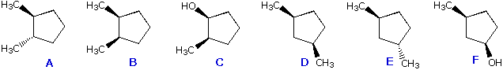
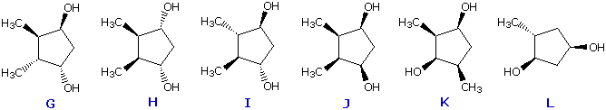

The structural formulas of twelve compounds, A through L, are drawn below. You may select any one of these by clicking the radio button beneath the structure. Once you have selected a compound, answer the following questions concerning the number of stereogenic centers, chirality and symmetry of the compound.


1. How many stereogenic centers are present in this compound? ... , 1 , 2 , 3 , 4 , 5
2. Is this compound chiral or achiral? ............ chiral , achiral
3. What symmetry element(s) are present in this compound? .... none , a plane of symmetry , a C2 axis of symmetry